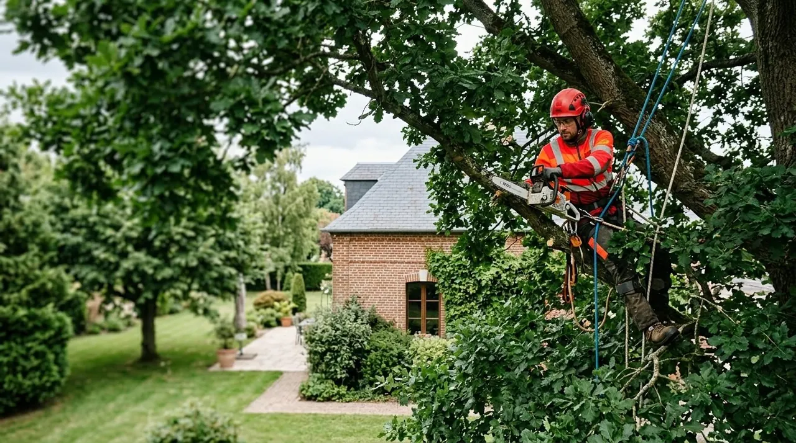
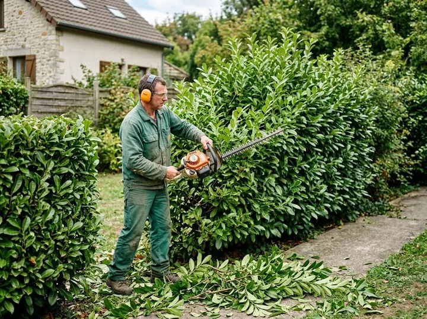
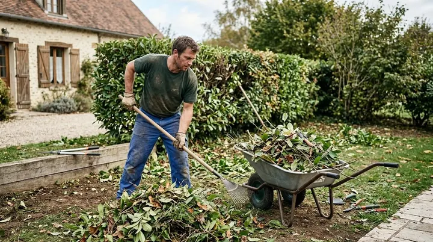

AEPS du Jardin · Évecquemont
Nos réalisations
Arbres, aménagements, espaces verts : un aperçu en images des métiers d'AEPS du Jardin.




Arbres
Au cœur de l'arbre
Élagage, soins et abattage : l'arboriste-grimpeur travaille dans le houppier, avec cordes et équipement de protection.
Photos d'illustration. Les chantiers d'AEPS du Jardin seront présentés ici.
Aménagements
Un jardin qui prend forme
Du terrain préparé au massif planté, l'aménagement paysager se construit étape par étape.
 Massifs et allée
Massifs et allée Préparation du terrain
Préparation du terrain Mise à niveau
Mise à niveauEspaces verts
Entretenus tout au long de l'année
Haies, pelouses, massifs, branchages : l'entretien d'un jardin demande des gestes variés.
 Pelouse
Pelouse
Haie Massif
Massif
Branchages Évacuation
Évacuation
Votre projet
Un arbre ou un terrain à traiter ?
Parlez-nous de votre arbre ou de votre jardin. Nous étudions votre demande et le devis est gratuit.